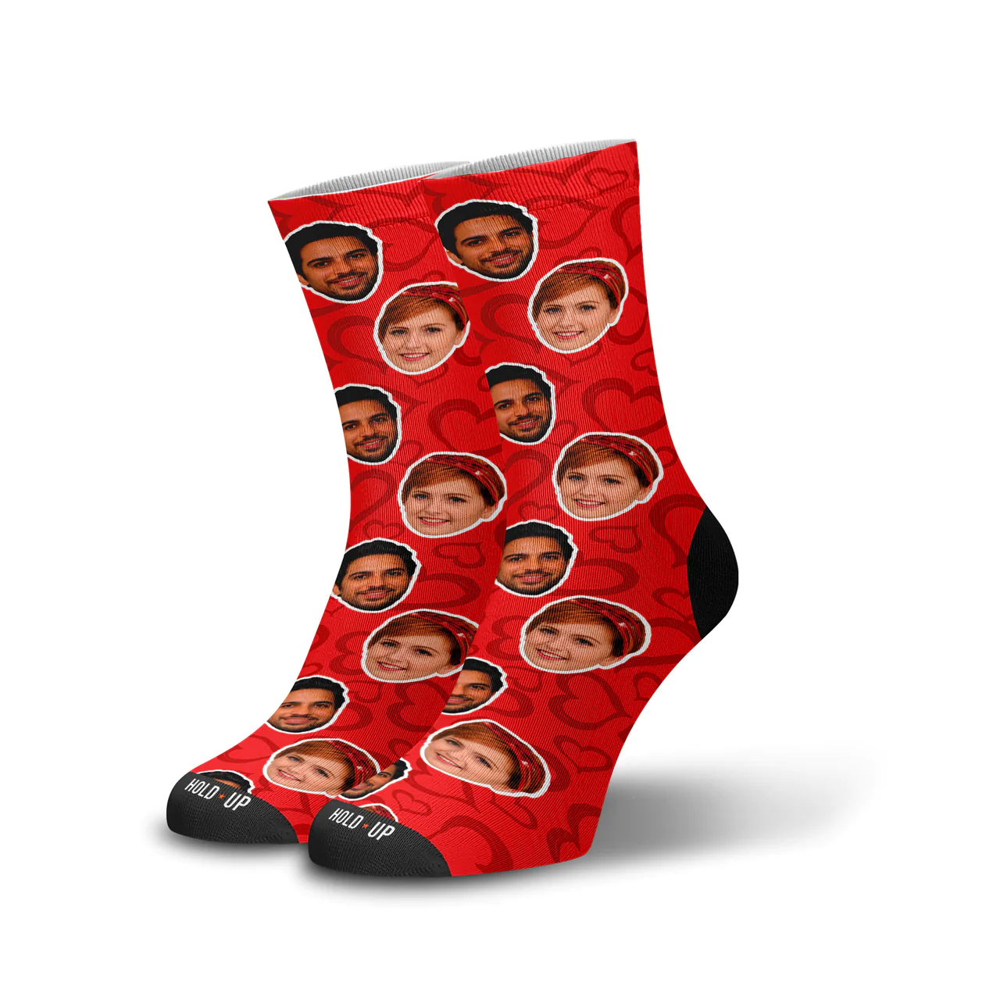

Produtos

Meia Conforto
R$ 15,00

Meia Esportiva
R$ 20,00
Bem-vindo à nossa loja de meias! Oferecemos uma ampla variedade de estilos, cores e tamanhos para atender às suas necessidades.
Claro! Aqui está um resumo sobre os diferentes tipos de meias que você pode usar em seu site de vendas:
Meias Alternativas: Estas meias são conhecidas por seu design único que vai além da altura convencional. Elas podem ser mais curtas, como as meias de tornozelo, ou mais altas, como as meias 3/4. Ideais para quem busca um visual diferente e moderno.
Esportivas: Projetadas para proporcionar conforto e suporte durante a prática de atividades físicas, as meias esportivas são feitas com tecidos respiráveis que absorvem o suor e ajudam a evitar bolhas nos pés. Podem incluir acolchoamento extra nas áreas de impacto e compressão para melhorar a circulação sanguínea.
Meias Infantis: Coloridas, divertidas e, acima de tudo, confortáveis, as meias infantis são projetadas pensando nas necessidades dos pequenos. Podem apresentar personagens de desenhos animados, cores vibrantes e materiais macios para manter os pés das crianças aquecidos e felizes.
Meias para Adultos: Disponíveis em uma variedade de estilos, materiais e cores, as meias para adultos atendem a uma ampla gama de preferências e necessidades. Desde meias formais para o ambiente de trabalho até meias casuais para o dia a dia, há opções para todos os gostos e ocasiões.
Meias de Personagem: Perfeitas para os fãs de cultura pop e desenhos animados, as meias de personagem apresentam estampas divertidas e coloridas dos personagens favoritos de filmes, séries, quadrinhos e videogames. São uma maneira única de adicionar um toque de diversão ao visual.
R$ 15,00
R$ 20,00
Telefone para contato: 82988879403
Entre em contato conosco para qualquer dúvida ou solicitação.